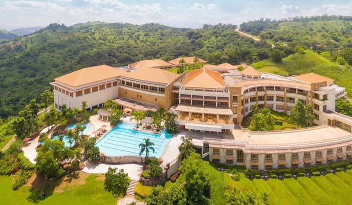
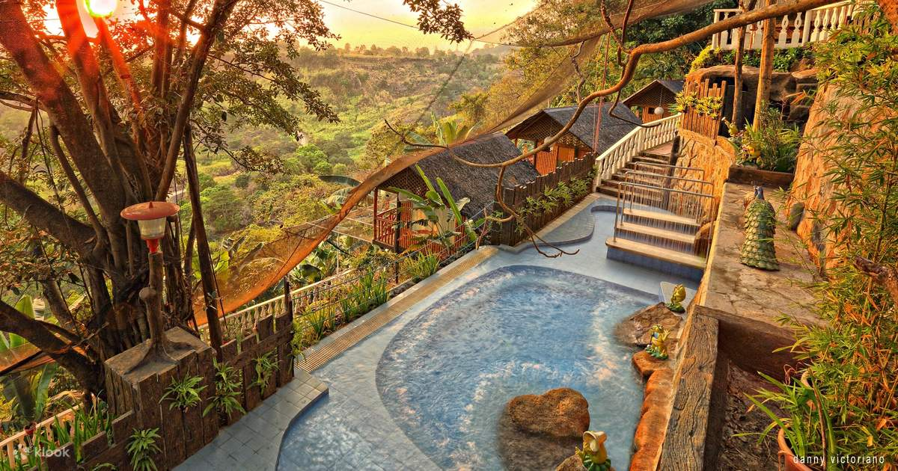

1. Bakasyunan Resort Tanay
1. Bakasyunan Resort TanayAbout:
Address: Sitio Balimbing, Barangay Plaza Aldea, Sampaloc, Tanay, Rizal, Philippines, 1980
Price: Starts from ₱ 1,935/night (Private Double - 1 Queen Bed)
Nestled in Tanay, Bakasyunan Resort Tanay blends comfort and convenience for your perfect Tanay vacation getaway. This hotel is not only perfect for families but also a great option for those looking for Rizal resorts suitable for company team building. It offers a variety of fun activities, including BBQ time in the garden, team building, and game facilitators, and even provides a perfect way to escape from daily routines. Although its location is not specifically in Rizal, this resort is always a popular choice, especially for those seeking a place to bond as a team and enjoy the beautiful green scenery of Tanay.
 2. Thunderbird Resorts & Casinos
2. Thunderbird Resorts & Casinos
About:
Address: Eastridge Avenue, Binangonan, Binangonan, Rizal, Philippines, 1940
Price: Starts from ₱ 6,21/night (Superior Room with Breakfast - 2 Double Bed)Nestled atop the Sierra Madre Mountain Range, Thunderbird Resorts & Casinos offers luxurious accommodations with stunning views of Laguna Bay and the Manila Skyline. This 4-star resort features an infinity pool, modern rooms with ample natural light, and a variety of recreational facilities.
Not only are the resort facilities perfect, but there are also various fun things to do. These include visiting the casinos, enjoying the food from their multiple restaurants, golfing, enjoying the green scenery, and even experiencing live entertainment presented by professional musicians, singers, and bands.
About:
Address: Marigman Road, San Roque, Antipolo, Rizal, Philippines, 1870
Price: Starts from ₱ 4,404/night
Just an hour from Metro Manila lies Bosay Resort, which offers the perfect escape for relaxation and quality time with loved ones. It's an ideal getaway near city attractions like SM Megamall, Shangri-La Plaza, and Smart Araneta Coliseum.
The pool offers various types of pools suitable for both kids and adults. You can even rent a cottage near the swimming pool for a more relaxing day. In addition, you can enjoy playing basketball on the hotel's court, savor delicious dishes at the in-house restaurant, or have a BBQ in the garden.
 4. Timberland Highlands Resort
About:
Address: Timberland Heights, Barangay Malanday, San Mateo, Rizal, Philippines, 1850
Price: Starts from ₱ 3,912/night (Premier Deluxe Twin, Room Only - 1 Twin Bed or 1 King Bed)
Situated within Timberland Heights, Timberland Highlands Resort is an exclusive 3-star suburban retreat that offers panoramic views from 250-450 meters above sea level with a blend of nature, luxury, and adventure. It takes less than an hour to arrive at this resort from Katipunan. The mountains of San Mateo surround the road on each side.
Enjoy nature's beauty with panoramic mountains, forests, and Metro Manila views. You can also savor diverse cuisine at the on-site restaurant. For nature enthusiasts, explore hiking trails, and mountain biking, enjoy leisurely forest walks, or try rock climbing. Don’t forget to relax by unwinding in the pool with a poolside bar or indulge in a spa massage at the end of the day.
About:
Address: Sitio Loreland, San Roque, Antipolo, Rizal, Philippines, 1870
Price: Starts from ₱ 3,317/night (Dormitory Triple Room With Breakfast - 3 Single Bed)
Loreland Farm Resort in San Roque, Antipolo City, offers a delightful retreat featuring pools, outdoor activities, sceneries, and of course, perfect hospitality! This resort is not only suitable for team bonding but also a great choice to enjoy the weekend with your kids and beloved family.
There's a playground for the younger guests, and the spa offers relaxing massages. Billiards and a sauna are also available for those looking for a way to kill time.Also, you must try savoring local and international cuisines served by the restaurants, it is a must!
About:
Address: 3 Taktak Rd. Brgy Dela Paz, Antipolo, Rizal, Philippines, 1870
Price: Starts from ₱ 4,467/night (Single Deluxe - 1 Single Bed)
Situated only 30 minutes from the metro, LeBlanc Hotel and Resort entices guests with chic, elegant rooms. The types of rooms you can find here include Single, Twin, Deluxe, Junior Suites, and Premier Suite options.
What sets it apart is the function halls where guests can conveniently conduct private events like birthdays, meetings, reunions, weddings, or any gathering, complete with the hotel’s banquet and events team. On top of that, guests must enjoy the gastronomic creations at The Bistro Cafe or the in-house cocktails.
About:
Address: 3 Dama De Noche Street, Cainta, Rizal, Philippines, 1800
Price: Starts from ₱ 2,539/night (Deluxe Double Room - 2 Queen Bed)
Santorini Hotel offers 80 guest rooms with four room types and excellent facilities located within the bustling Sta. Enjoy easy shopping access right below the tower, and explore cinemas, upscale malls, restaurants, and cafés within the complex. It's a perfect blend of luxury & modern, convenience, and entertainment for a memorable stay.
 8. Luljetta's Place Garden Suites
About
Address: Sitio Loreland, San Roque, Antipolo, Rizal, Philippines, 1870
Price: Starts from ₱ 3,491.07/ Night (Economy Room - 1 Full Bed)
Luljetta's Place Garden Suites in Antipolo, Rizal, offers a blend of comfort and tranquillity perfect for families. Nestled amidst lush surroundings, the resort provides a range of family-friendly amenities, including a designated play area for kids and spacious suites for a cosy stay.
Guests can unwind with therapeutic spa treatments, enjoy refreshing dips in infinity pools with scenic views, and indulge in delightful meals at the on-site restaurant serving local and international cuisine. Whether exploring hiking trails or participating in organised activities, Luljetta's Place ensures a relaxing and enjoyable retreat for families seeking both relaxation and adventure.
9. The Apiary Mountain Camp and Farm
Abount:
Address: Lot 152-A Sitio Maysawa Cuyambay, Tanay, Rizal, Philippines, 1980
Price: Starts from ₱ 8,831.17/ Night (Family Glamping Dome - Double Bed)
The Apiary Mountain Camp and Farm in Tanay, Rizal, offers a range of activities amidst scenic landscapes. Guests can enjoy guided hikes, bird-watching, eco-farming, ziplining, and rappelling adventures. Dining features farm-to-table meals with fresh local ingredients, complemented by cosy rustic settings.
Address: Sampaloc Road Sitio Mapunso, Km 60, Tanay, Rizal, Philippines, 1980
Price: Starts from ₱ ₱ 4,500.00/ Night (Family Room - Multiple Beds Family Lake View)
Casa de Robles in Tanay, Rizal, offers a tranquil retreat with various activities to enjoy. Guests can engage in nature walks, bird-watching, and outdoor picnics amidst lush surroundings. The resort provides a swimming pool for relaxation and a playground for children.
Dining options include local specialties served in a scenic garden setting, emphasising fresh ingredients and warm hospitality. Ideal for families, Casa de Robles ensures a peaceful getaway with opportunities for both relaxation and outdoor recreation in the heart of nature.